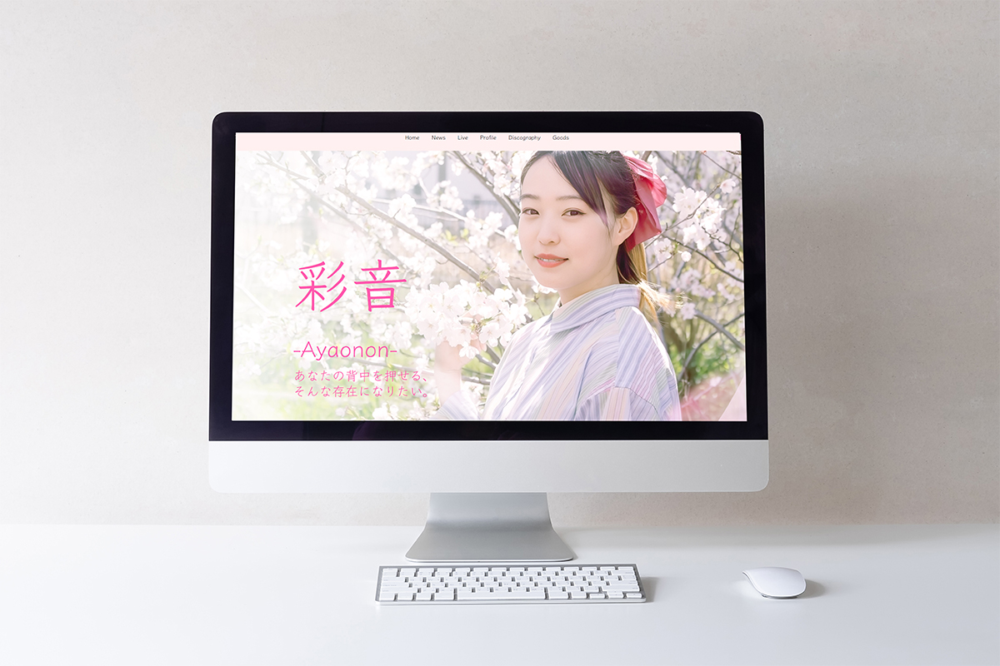
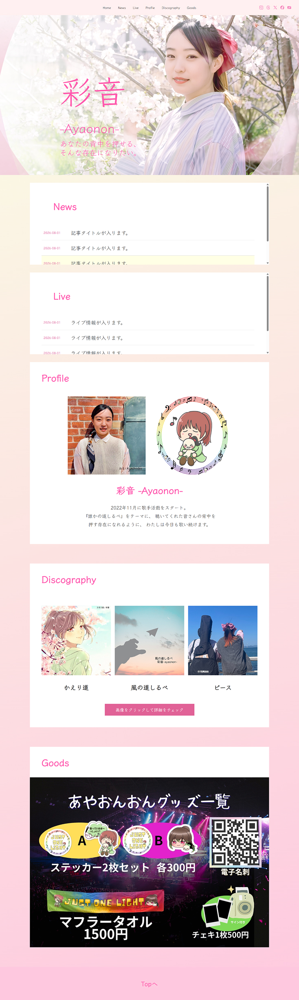
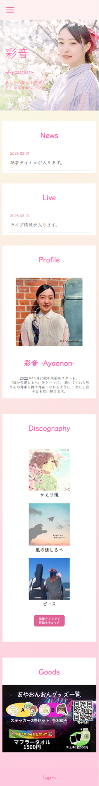

アーティストHP
Client Work / Web Site

About
シンガー「彩音-Ayaonon-」様の アーティストHPを制作しました。
分散していた楽曲・ライブ情報・グッズなどの情報を一元化し、ファンが欲しい情報へスムーズにアクセスできるポータルサイトとして制作しました。
デザイン面では、アーティスト写真の「桜」や楽曲の持つあたたかい世界観に合わせて「やさしさ・柔らかさ」をテーマに設定。柔らかなピンクベースの配色や角丸のカードデザインで親しみやすさを表現しました。
また、ニュースやディスコグラフィーなどのコンテンツをブロックごとに整理し、直感的に情報を探せる視認性の高いレイアウトを意識しました。
Tools
Photoshop / Figma / HTML / CSS
Schedule
約2週間


← Worksへ戻る